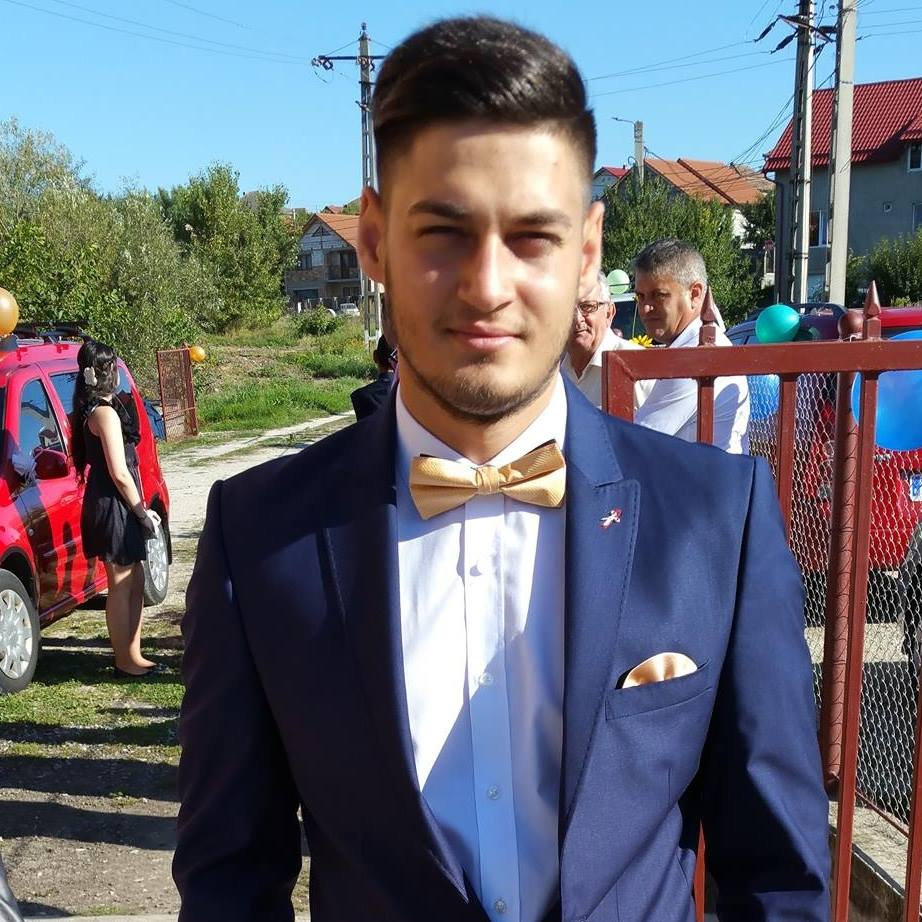

|  | Toth Stelian Razvan 23 de ani / M / Cluj Telefon: 0724036765 Email: stelianrazv@gmail.com Data Nasterii: 09.05.1994 |
| Experienta | Programator web Sc Nexops Technology Srl 07/2010 - 08/2017 Domeniul: Java Developer Responsabilitati: Responsabil cu implementarea de module pentru diverse aplicatii web, folosind PHP, HTML, CSS, Jquery, MySQL. |
| Educatie | Facultatea de Medicina UMF Cluj, Specializarea: Balneofiziokinetoterapie si Recuperare medicala Master anul II, Specializarea: Bolii Reumatologice Curs de programator: Java |
| Abilitati | Limba engleza: Mediu Carnet de conducere: Categoria B Alte abilitati: abilitati de comunicare, sociabil, persoana organizata, ordonata, adaptabilitate la program, punctual, Originalitate, promptitudine, seriozitate Java, HTML + CSS + JavaScript, PHP, MySQL, Photoshop |
| Obiectiv | Dezvoltarea carierei in domeniu IT |
| Jobul Dorit | Contractul dorit: Full-time, Part-time Statut: Caut un job! Disponibil: Oricand! Locatie job: Cluj! |